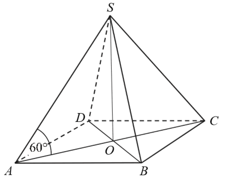
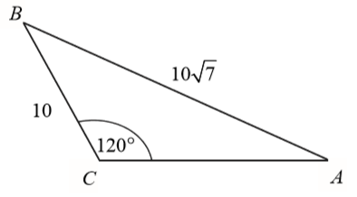
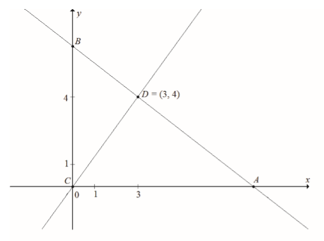
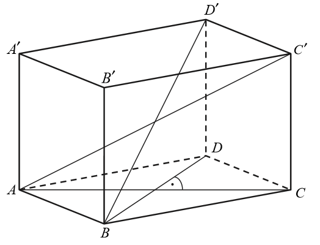
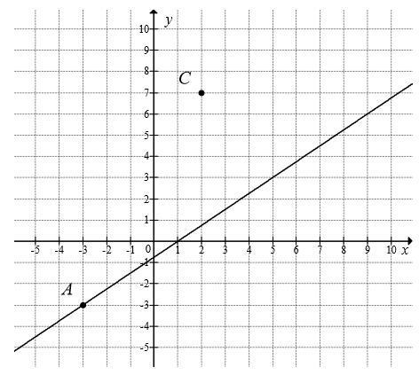

Zadania za 4 i 5 pkt - matura podstawowa
Na tej stronie znajduje się zestawienie zadań
maturalnych rozszerzonej odpowiedzi dla matury podstawowej.
Ciąg arytmetyczny \((a_n)\) jest określony dla każdej liczby naturalnej \(n\ge1\).
Różnicą tego ciągu jest liczba \(r = -4\), a średnia arytmetyczna początkowych sześciu wyrazów tego
ciągu: \(a_1\), \(a_2\), \(a_3\), \(a_4\), \(a_5\), \(a_6\), jest równa \(16\).
Oblicz pierwszy wyraz tego ciągu.
Oblicz liczbę \(k\), dla której \(a_k = -78\).
\(a_1 = 26\) i \(k = 27\)
Dany jest punkt \(A = (-18, 10)\). Prosta o równaniu \(y = 3x\) jest symetralną
odcinka \(AB\). Wyznacz współrzędne punktu \(B\).
\(B = \left(20\frac{2}{5}; -2\frac{4}{5}\right)\)
Długość krawędzi podstawy ostrosłupa prawidłowego czworokątnego jest równa \(6\).
Pole powierzchni całkowitej tego ostrosłupa jest cztery razy większe od pola jego podstawy. Kąt
\(\alpha\) jest kątem nachylenia krawędzi bocznej tego ostrosłupa do płaszczyzny podstawy (zobacz
rysunek). Oblicz cosinus kąta \(\alpha\). 
\(\cos \alpha = \frac{\sqrt{5}}{5}\)
Podstawą ostrosłupa \(ABCDS\) jest prostokąt o polu równym \(432\), a stosunek
długości boków tego prostokąta jest równy \(3:4\). Przekątne podstawy \(ABCD\) przecinają się w
punkcie \(O\). Odcinek \(SO\) jest wysokością ostrosłupa (zobacz rysunek). Kąt \(SAO\) ma miarę
\(60^\circ \). Oblicz objętość tego ostrosłupa. 
Liczby rzeczywiste \(x\) i \(z\) spełniają warunek \(2x+z=1\). Wyznacz takie
wartości \(x\) i \(z\), dla których wyrażenie \(x^2+z^2+7xz\) przyjmuje największą wartość. Podaj tę
największą wartość.
Dany jest trójkąt rozwartokątny \(ABC\), w którym \(\sphericalangle ACB\) ma miarę
\(120^\circ \). Ponadto wiadomo, że \(|BC|=10\) i \(|AB|=10\sqrt{7}\) (zobacz rysunek). Oblicz
długość trzeciego boku trójkąta \(ABC\). 
W ciągu arytmetycznym \((a_1,a_2,...,a_{39},a_{40})\) suma wyrazów tego ciągu o
numerach parzystych jest równa \(1340\), a suma wyrazów ciągu o numerach nieparzystych jest równa
\(1400\). Wyznacz ostatni wyraz tego ciągu arytmetycznego.
\(10\)
Środek okręgu leży w odległości \(10\) cm od cięciwy tego okręgu. Długość tej
cięciwy jest o \(22\) cm większa od promienia tego okręgu. Oblicz promień tego okręgu.
\(r=26\)
Długość krawędzi bocznej ostrosłupa prawidłowego czworokątnego \(ABCDS\) jest równa
\(12\). (zobacz rysunek). Krawędź boczna tworzy z wysokością tego ostrosłupa kąt \(\alpha \) taki,
że \(\operatorname{tg} \alpha =\frac{2}{\sqrt{5}}\). Oblicz objętość tego ostrosłupa. 
\(V=\frac{512\sqrt{5}}{3}\)
W układzie współrzędnych punkty \(A = (4,3)\) i \(B = (10, 5)\) są wierzchołkami
trójkąta \(ABC\). Wierzchołek \(C\) leży na prostej o równaniu \(y = 2x + 3\). Oblicz współrzędne
punktu \(C\), dla którego kąt \(ABC\) jest prosty.
\(C = \biggl( 6\frac{2}{5}, 15\frac{4}{5}\biggl)\)
Dane są dwa zbiory: \(A = \{100, 200, 300, 400, 500, 600, 700\}\) i \(B = \{10, 11,
12, 13, 14, 15, 16\}\). Z każdego z nich losujemy jedną liczbę. Oblicz prawdopodobieństwo zdarzenia
polegającego na tym, że suma wylosowanych liczb będzie podzielna przez \(3\). Obliczone
prawdopodobieństwo zapisz w postaci nieskracalnego ułamka zwykłego.
\(P(A) = \frac{16}{49}\)
Dany jest graniastosłup prawidłowy trójkątny (zobacz rysunek). Pole powierzchni
całkowitej tego graniastosłupa jest równe \(45\sqrt{3}\). Pole podstawy graniastosłupa jest równe
polu jednej ściany bocznej. Oblicz objętość tego graniastosłupa. 
\(a = 6\), \(H = \frac{3\sqrt{3}}{2}\), \(V = 40\frac{1}{2}\)
Dany jest ostrosłup prawidłowy czworokątny o wysokości \(H=16\). Cosinus kąta
nachylenia krawędzi bocznej do płaszczyzny podstawy tego ostrosłupa jest równy \(\frac{3}{5}\).
Oblicz pole powierzchni bocznej tego ostrosłupa.
W ciągu arytmetycznym \((a_n)\), określonym dla liczb naturalnych \(n\ge1\), wyraz
szósty jest liczbą dwa razy większą od wyrazu piątego, a suma dziesięciu początkowych wyrazów tego
ciągu jest równa \(S_{10}=\frac{15}{4}\). Oblicz wyraz pierwszy oraz różnicę tego ciągu.
\(a_1=-\frac{3}{4}\), \(r=\frac{1}{4}\)
Punkty \(A=(-1,1)\) i \(C=(1,9)\) są wierzchołkami trójkąta równoramiennego
\(ABC\), w którym \(|AC|=|BC|\). Podstawa \(AB\) tego trójkąta zawiera się w prostej o równaniu
\(y=\frac{1}{2}x+\frac{3}{2}\). Oblicz współrzędne wierzchołka \(B\) tego trójkąta.
\(B=\left(\frac{43}{5},\frac{29}{5}\right)\)
W ostrosłupie prawidłowym trójkątnym \(ABCS\) krawędź podstawy ma długość \(a\).
Pole powierzchni bocznej tego ostrosłupa jest dwa razy większe od pola jego podstawy. Oblicz cosinus
kąta nachylenia krawędzi bocznej tego ostrosłupa do płaszczyzny jego podstawy. 
\(\cos \alpha = \frac{2\sqrt{7}}{7}\)
Ze zbioru \(A = \{-3, -2, -1, 1, 2, 3\}\) losujemy liczbę \(a\), natomiast ze
zbioru \(B = \{-1, 0, 1, 2\}\) losujemy liczbę \(b\). Te liczby są - odpowiednio - współczynnikiem
kierunkowym i wyrazem wolnym funkcji liniowej \(f(x) = ax + b\). Oblicz prawdopodobieństwo zdarzenia
polegającego na tym, że otrzymana funkcja \(f\) jest rosnąca i ma dodatnie miejsce zerowe.
\(P(A) = \frac{3}{24} = \frac{1}{8}\)
W trójkącie prostokątnym \(ACB\) przyprostokątna \(AC\) ma długość \(5\), a promień
okręgu wpisanego w ten trójkąt jest równy \(2\). Oblicz pole trójkąta \(ACB\).
\(P = 30\)
Dany jest trójkąt \(ABC\), w którym \(A=(-9,8)\). Bok \(BC\) tego trójkąta zawiera
się w prostej o równaniu \(y=-2x+38\). Prosta zawierająca wysokość tego trójkąta poprowadzona z
wierzchołka \(B\) ma równanie \(3x+2y-61=0\). Wyznacz współrzędne wierzchołków \(B\) i \(C\) oraz
napisz równanie prostej zawierającej wysokość trójkąta poprowadzoną z wierzchołka \(C\).
\(B=(15,8), C=(9,20)\)
prosta \(CD: x=9\)
prosta \(CD: x=9\)
W ostrosłupie prawidłowym trójkątnym krawędź boczna jest trzy razy dłuższa od
wysokości ostrosłupa. Krawędź podstawy ma długość \(12\). Oblicz objętość i pole powierzchni bocznej
tego ostrosłupa.
\(V=36\sqrt{2}\)
\(P_b=54\sqrt{2}\)
\(P_b=54\sqrt{2}\)
Dane są punkty \(A=(-4,0)\) i \(M=(2,9)\) oraz prosta \(k\) o równaniu
\(y=-2x+10\). Wierzchołek \(B\) trójkąta \(ABC\) to punkt przecięcia prostej \(k\) z osią \(Ox\)
układu współrzędnych, a wierzchołek \(C\) jest punktem przecięcia prostej \(k\) z prostą \(AM\).
Oblicz pole trójkąta \(ABC\).
\(\frac{243}{7}\)
Ze zbioru wszystkich liczb naturalnych dwucyfrowych losujemy jedną liczbę. Oblicz
prawdopodobieństwo zdarzenia, że wylosujemy liczbę, która jest równocześnie mniejsza od \(40\) i
podzielna przez \(3\). Wynik podaj w postaci ułamka zwykłego nieskracalnego.
\(\frac{1}{9}\)
W ostrosłupie prawidłowym trójkątnym wysokość ściany bocznej prostopadła do
krawędzi podstawy ostrosłupa jest równa \(\frac{5\sqrt{3}}{4}\), a pole powierzchni bocznej tego
ostrosłupa jest równe \(\frac{15\sqrt{3}}{4}\). Oblicz objętość tego ostrosłupa.
\(V=\frac{\sqrt{209}}{12}\)
Funkcja kwadratowa \(f(x)=ax^2+bx+c\) ma dwa miejsca zerowe \(x_1=-2\) i \(x_2=6\).
Wykres funkcji \(f\) przechodzi przez punkt \(A=(1,-5)\). Oblicz najmniejszą wartość funkcji \(f\).
\(-\frac{16}{3}\)
Punkt \(C=(0,0)\) jest wierzchołkiem trójkąta prostokątnego \(ABC\), którego
wierzchołek \(A\) leży na osi \(Ox\), a wierzchołek \(B\) na osi \(Oy\) układu współrzędnych. Prosta
zawierająca wysokość tego trójkąta opuszczona z wierzchołka \(C\) przecina przeciwprostokątną \(AB\)
w punkcie \(D=(3,4)\).  Oblicz
współrzędne wierzchołków \(A\) i \(B\) tego trójkąta oraz długość przeciwprostokątnej \(AB\).
\(A=\left(\frac{25}{3},0\right )\), \(B=\left(0,\frac{25}{4}\right )\),
\(|AB|=\frac{125}{12}\)
Podstawą graniastosłupa prostego \(ABCDEF\) jest trójkąt prostokątny \(ABC\), w
którym \(|\sphericalangle ACB=90^\circ |\) (zobacz rysunek). Stosunek długości przyprostokątnej
\(AC\) tego trójkąta do długości przyprostokątnej \(BC\) jest równy \(4:3\). Punkt \(S\) jest
środkiem okręgu opisanego na trójkącie \(ABC\), a długość odcinka \(SC\) jest równa \(5\). Pole
ściany bocznej \(BEFC\) graniastosłupa jest równe \(48\). Oblicz objętość tego graniastosłupa. 
\(V=192\)
Ramię trapezu równoramiennego \(ABCD\) ma długość \(\sqrt{26}\). Przekątne w tym
trapezie są prostopadłe, a punkt ich przecięcia dzieli je w stosunku \(2:3\). Oblicz pole tego
trapezu.
\(25\)
Punkty \(A=(-2,-8)\) i \(B=(14,-8)\) są wierzchołkami trójkąta równoramiennego
\(ABC\), w którym \(|AB|=|AC|\). Wysokość \(AD\) tego trójkąta jest zawarta w prostej o równaniu
\(y=\frac{1}{2}x-7\). Oblicz współrzędne wierzchołka \(C\) tego trójkąta.
\(C=\left (\frac{38}{5},\frac{24}{5}\right )\)
Podstawą graniastosłupa prostego \(ABCDA'B'C'D'\) jest romb \(ABCD\). Przekątna
\(AC'\) tego graniastosłupa ma długość \(8\) i jest nachylona do płaszczyzny podstawy pod kątem
\(30^\circ \), a przekątna \(BD'\) jest nachylona do tej płaszczyzny pod kątem \(45^\circ \). Oblicz
pole powierzchni całkowitej tego graniastosłupa. 
\(16(\sqrt{3}+4)\)
Wyznacz długość boku kwadratu wpisanego w trójkąt równoboczny o boku \(a\) w ten
sposób, że jeden bok kwadratu jest zawarty w boku trójkąta, a dwa wierzchołki kwadratu należą do
pozostałych boków trójkąta.
\(a(2\sqrt{3}-3)\)
Dane są punkty \(A=(4,2)\) i \(B=(1,-3)\). Wyznacz współrzędne punktu \(C\)
należącego do osi \(OY\), tak aby \(|\sphericalangle ACB|=90^\circ \).
\(C=(0,-2)\) lub \(C=(0,1)\)
Dany jest graniastosłup prawidłowy trójkątny o dolnej podstawie \(ABC\) i górnej
\(A'B'C'\). Przekątna ściany bocznej tworzy z krawędzią podstawy kąt \(60^\circ \). Pole ściany
bocznej graniastosłupa jest równe \(2\sqrt{3}\). Oblicz pole trójkąta \(ABC'\).
\(\frac{\sqrt{15}}{2}\)
Ze zbioru wszystkich liczb naturalnych dwucyfrowych losujemy kolejno dwa razy po
jednej liczbie bez zwracania. Oblicz prawdopodobieństwo zdarzenia polegającego na tym, że suma
wylosowanych liczb będzie równa \(30\). Wynik zapisz w postaci ułamka zwykłego nieskracalnego.
\(\frac{1}{801}\)
Dany jest ciąg arytmetyczny \((a_n)\) określony dla każdej liczby naturalnej \(n\ge
1\), w którym \(a_1+a_2+a_3+a_4=2016\) oraz \(a_5+a_6+a_7+...+a_{12}=2016\). Oblicz pierwszy wyraz,
różnicę oraz najmniejszy dodatni wyraz ciągu \((a_n)\).
\(a_1=567\), \(r=-42\), \(a_{14}=21\)
Dany jest stożek o objętości \(8\pi \), w którym stosunek wysokości do promienia
podstawy jest równy \(3:8\). Oblicz pole powierzchni bocznej tego stożka.
\(2\pi \sqrt{73}\)
Rejsowy samolot z Warszawy do Rzymu przelatuje nad Austrią każdorazowo tą samą
trasą z taką samą zakładaną prędkością przelotową. We wtorek jego średnia prędkość była o \(10\%\)
większa niż prędkość przelotowa, a w czwartek średnia prędkość była o \(10\%\) mniejsza od
zakładanej prędkości przelotowej. Czas przelotu nad Austrią w czwartek różnił się od wtorkowego o
\(12\) minut. Jak długo trwał przelot tego samolotu nad Austrią we wtorek?
\(54\) minuty
Na rysunku przedstawione są dwa wierzchołki trójkąta prostokątnego \(ABC\):
\(A=(-3,-3)\) oraz \(C=(2,7)\) oraz prosta o równaniu \(y=\frac{3}{4}x-\frac{3}{4}\), zawierająca
przeciwprostokątną \(AB\) tego trójkąta.  Oblicz współrzędne wierzchołka \(B\) tego trójkąta i długość odcinka \(AB\).
\(B=\left(7, 4\frac{1}{2}\right)\) oraz \(|AB|=12{,}5\)
Trójkąt równoboczny \(ABC\) jest podstawą ostrosłupa prawidłowego \(ABCS\), w
którym ściana boczna jest nachylona do płaszczyzny podstawy pod kątem \(60^\circ \), a krawędź
boczna ma długość \(7\) (zobacz rysunek). Oblicz objętość tego ostrosłupa. 
\(V=21\sqrt{7}\)